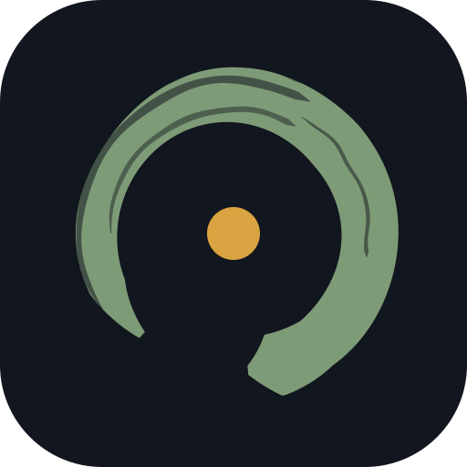

Towarzyszę osobom żyjącym z HIV i ich bliskim. Pomogę Ci znaleźć sprawdzone informacje, zrozumieć wyniki i być w kontakcie z ludźmi, którzy to znają.
W Kręgu możesz
Prywatność jest tu domyślna, nie opcją do włączenia. To, co zapisujesz o swoim zdrowiu, zostaje zaszyfrowane na Twoim urządzeniu — i nikt w Kręgu tego nie widzi, także my.
Odtwórz konto na tym urządzeniu — passkeyem (Face ID / odcisk) albo Kluczem Kręgu. Wszystko odszyfrowuje się tutaj; serwer nie widzi ani jednego, ani drugiego.
albo Kluczem Kręgu
To sposób, by wejść na koncie z innego urządzenia albo je odzyskać. Zapisz go — zrzut ekranu lub menedżer haseł. Nikt, także Krąg, go nie odtworzy.
Wpisz pseudonim osoby, którą znasz z Kręgu.
Wyniki, dawki, nastrój — cokolwiek chcesz mieć pod ręką. Nic z dziennika nie opuszcza tego telefonu.
Profil jest szyfrowany Twoją frazą i synchronizuje się między urządzeniami. Serwer trzyma tylko nieczytelny szyfrogram.
Sposób, by wejść na koncie z innego urządzenia albo je odzyskać. Zapisz go bezpiecznie. Nikt, także Krąg, go nie odtworzy.